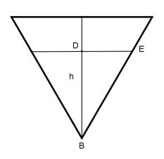

Aufgabe 244 Der Achsenschnitt eines kegelförmigen Messbechers ist ein gleichseitiges Dreieck mit einer Seiten- länge von 10 cm. In welcher Höhe von der Spitze aus muss die Markierung angebracht werden, die eine Füllung von 60 cm3 anzeigt?

Gesucht ist BE. DE = r BE = 2 * r wegen gleichseitigem Dreieck Satz von Pythagoras im Dreieck BED: BE2 = DE2 + h2|-DE2 h2 = BE2 - DE2 = (2 * r)2 - r2 = = 4 * r2 - r2 = 3 * r2 |:3 h2 r2 = ---- |√ 3 h r = ---- √3 h л * (-----)2 * h л * r2 * h √3 V = ------------- = ------------------- 3 3 л * h2 * h V = ------------- |*9 9 9 * V = л * h3 |:л 9 * V h3 = ------- л h = = 5,56 cm 5,56 cm r = ---------- = 3,21 cm √3 BE = 2 * 3,21 cm = 6,42 cm